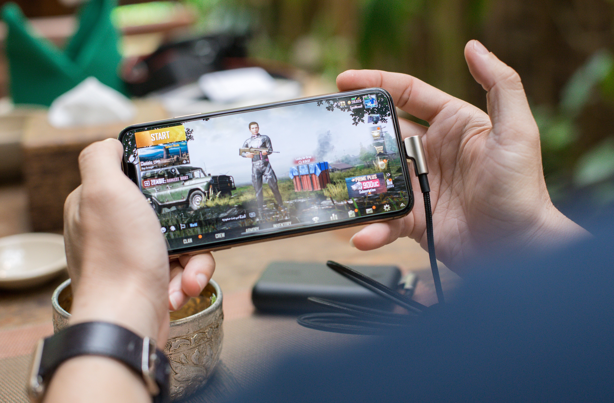

PC Gaming
PC gaming offers a large variety of games and allows players to customize their gaming computers and accessories.
Explore different ways people experience gaming.
Gaming includes many different genres, platforms, communities, and experiences. Explore some of the different parts of gaming below.
PC gaming offers a large variety of games and allows players to customize their gaming computers and accessories.

Mobile games allow people to play directly from their smartphones and make gaming easy to enjoy almost anywhere.

Adventure games let players explore new worlds, experience stories, solve problems, and discover new locations.

Sports games recreate activities such as soccer, basketball, football, hockey, and racing.

Esports brings competitive gaming into organized matches and tournaments where players and teams compete against each other.

Multiplayer gaming lets friends play together, compete against each other, and share the same gaming experience.
Computers provide flexibility, customizable hardware, and access to many different genres and types of games.
PlayStation consoles offer many popular games, online multiplayer experiences, and several different types of entertainment.
Xbox offers console gaming, online multiplayer, and access to a wide range of gaming genres.
Nintendo is known for creative characters, family-friendly games, and portable gaming experiences.
Gaming technology continues to change through new consoles, improved graphics, mobile devices, online communities, and different ways to play.
Players now have more choices than ever when deciding what kinds of games they want to play and which platforms they want to use.